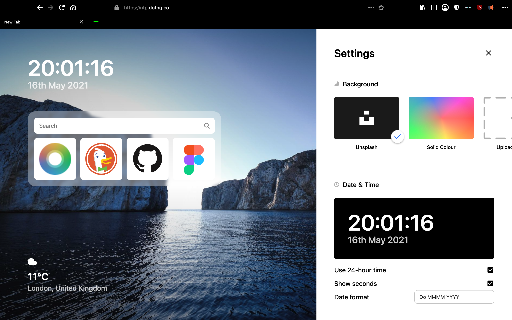

Sandro Linux
Dot New Tab page (Compass) updates and I give my thoughts on it
Dot Browser has added a search box to their new tab page or NTP for short, as well as weather.
The design of this new tab page is very elegant and modern in my opinion.

It also has settings to configure the background image on the new tab page, as well as being able to change the location for your weather and no location services currently but location services are just creepy because you can just enter in your town or city yourself, you don't need to tell websites exactly where in the world you are. Also, you can change the temperature units to Celsius, Fahrenheit or Kelvin. With the clock, you can set whether it uses 24-hour time, shows seconds and even change the date format. With Dot NTP, you can also change the background from Unsplash which is bascially a background image of a scenic place. You can also have a solid colour or maybe upload your own image for it, although that does not seem to be working for now.
Currently, Dot NTP is not the default for Dot Browser but the team over at Dot have confirmed for me that it will be implemented soon. Also, they have told me that they are going to release an extension to add Dot new tab page to Firefox browsers so even if you don't use Dot you can still use Dot NTP. So to conclude, Dot NTP seems to be a nice elegant new tab page which is very nice and pretty but at the same time functional and customisable.